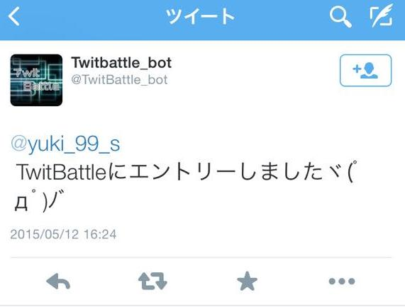

twitBattleとは、その名前の通り、Twitter上で文字列バトルを行うゲームのことです。
TwitBattleに参加するのはすごく簡単。Twitterに、5 7 5文字のツイートの後ろにハッシュタグ「#twitbattle」をつけてつぶやくだけ！
参加に成功すると、以下のように「エントリーしました」と通知が来ます。文字数が5 7 5になっていない場合もその旨の通知が来ます。
文字数が5 7 5になっていない場合も以下のような通知が来ます。
対戦相手が見つかると、サーバ側で自動でバトルが行われます。相手が見つかるまでには時間がかかることがあります。
TwitBattleが開始されると、投稿されたツイートに含まれる文字達は3つの属性に分類されます。
漢字属性: 漢字が属します。その他属性に勝ちます。
かなカナ属性: ひらがな、カタカナが属します。漢字属性に勝ちます。
その他属性: 数字、アルファベット、記号などが属します。かなカナ属性に勝ちます。
コンピュータによる文字列の分類が終了すると、一文字目から属性の勝敗判定によってバトルが進んでいきます。
以下の2プレイヤーのバトルの進行をみていきましょう。
1文字目"T"（その他）vs 1文字目"5"（その他） 引き分けなのでお互いの体力が1減ります。
2文字目"w"（その他）vs 2文字目"7"（その他） 引き分けなのでお互いの体力が1減ります。
3文字目"i"（その他）vs 3文字目"7"（その他） 引き分けなのでお互いの体力が1減ります。
4文字目"t"（その他）vs 4文字目"文"（漢字） 漢字属性の勝ちなので、右のプレイヤーの4文字目は残ります。
5文字目"で"（かな） vs 4文字目"文"（漢字） かなカナ属性の勝ちなので、左のプレイヤーの5文字目は残ります。
5文字目"で"（かな） vs 5文字目"字"（漢字） かなカナ属性の勝ちなので、左のプレイヤーの5文字目は残ります。
5文字目"で"（かな） vs 6文字目"タ"（漢字） 引き分けなのでお互いの体力が1減ります。
と、このようにして試合が進行していきます。
試合が終了すると、結果が届きます。
スコアやランキングの確認は、当サイト一番上の「ランキングホーム」より確認することが出来ます。